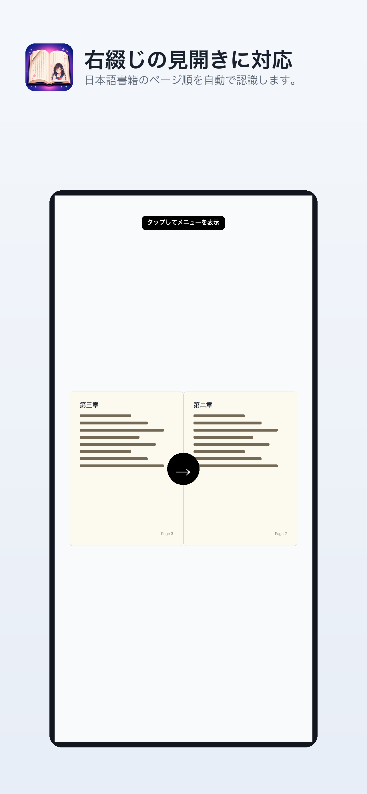
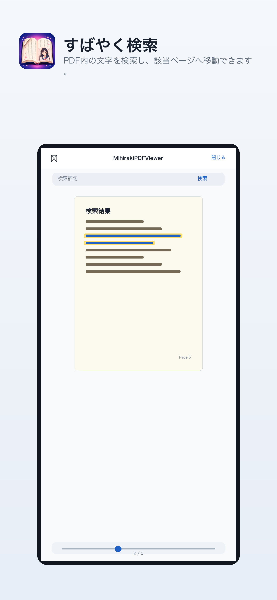
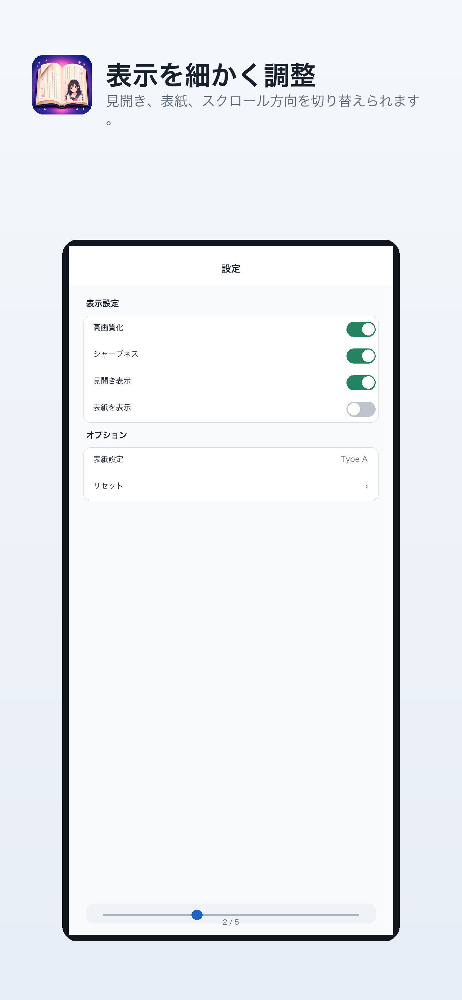
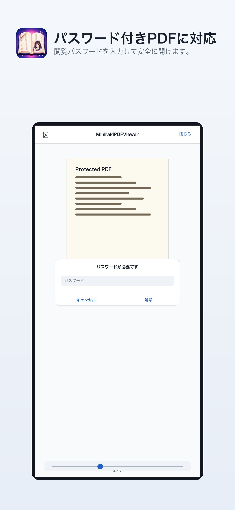

悩み
右綴じのPDFを開くと、左右のページやスワイプ方向が合わない。
右綴じPDF・日本語書籍向けビューア
MihirakiPDFViewerは、右綴じの本や日本語書籍を読みやすく 表示するためのシンプルなPDFビューアです。ページレイアウトと スクロール方向を読み取り、単ページ表示と見開き表示を快適に 切り替えられます。

一般的なPDFビューアでは、右綴じの本や見開きPDFが 期待どおりに並ばないことがあります。MihirakiPDFViewerは、 PDFの設定を読み取り、読む流れに合う表示へ整えます。
右綴じのPDFを開くと、左右のページやスワイプ方向が合わない。
スクロール方向とページレイアウトを認識し、自然な見開きで表示します。
ズーム、検索、高画質表示、シャープネスで細かな文字も確認できます。
PDF閲覧に必要な操作を、シンプルな画面にまとめました。
PDFの方向設定をもとに、L2R/R2Lのページ移動を切り替えます。
表紙あり/なしを調整しながら、文書に合うレイアウトで閲覧できます。
PDF内テキストを検索し、ピンチ操作で必要な箇所を拡大できます。
閲覧パスワードが必要なPDFも、入力後にそのまま読み進められます。



右綴じのPDFや資料を、iPhoneやiPadで読みたい人に向いています。
右綴じの本を、紙の本に近い感覚でページ移動できます。
見開き表示で左右のつながりを保ちながら閲覧できます。
検索とズームを使って、必要な箇所をすばやく確認できます。
App Store公開後、このボタンのリンクをApp Store URLへ 差し替えてください。